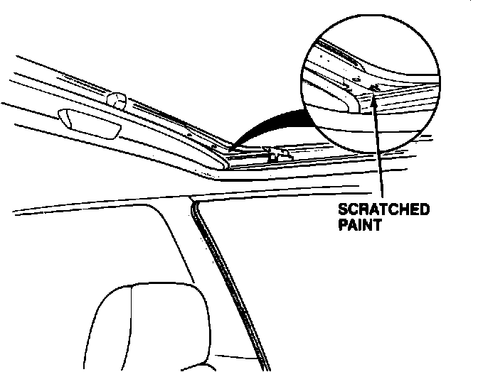
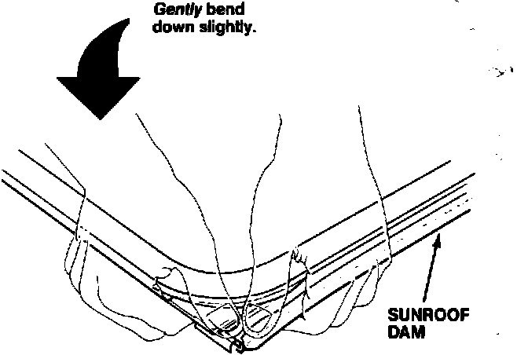

Sunroof - Creaks
88acura01June 20, 1988
YEAR MODEL APPLICATION
1988 LEGEND ALL
SEDAN
88-014
Sunroof Creaks
SYMPTOM
The sunroof creaks when the sunroof is closed.
PROBABLE CAUSE
The metal dam at the back of the sunroof rubs against the roof brace.
DIAGNOSIS
1. Road test the vehicle and check for a creaking noise with the sunshade open.
2. Open the sunroof slightly while driving with the creaking noise audible.
If the creaking noise disappears when the sunroof is opened slightly, repair the sunroof as described under CORRECTIVE ACTION.

CORRECTIVE ACTION
1. Remove the sunroof glass. (Refer to Sunroof Removal in the Body, section of the Service Manual.)
NOTE: With the sunroof glass removed examine the roof brace at the rear comers of the sun opening. In most cases the paint will be scratched or chipped.

2. Gently but firmly bend the left rear corner of the sunroof dam down slightly. Repeat this step on the right rear corner.
CAUTION: Excessive bending of the sunroof dam may produce water leaks. Do not overbend the sunroof dam.
NOTE: Do not replace the sunroof glass if the rubber on the sunroof dam is torn or damaged. Repair damaged sunroof dams with an appropriate rubber adhesive.
3. Reinstall the sunroof.
PARTS INFORMATION
None.
WARRANTY INFORMATION
Operation Number: 814040
Flat Rate Time: 0.6 hour
Failed Part #: 70200-SD4-920
Defect Code: 042
Contention Code: B07